TECNOTREE COMMERCIAL ENGINE¶
1. OBJETIVO¶
El presente documento buscar explicar y detallar el proceso que genera Tecnotree Commercial Engine.
2. ALCANCE¶
Áreas involucradas: Performance de Red
3. DEFINICIONES¶
- Cortado: Servidor UNIX en donde se importan los XML desde el proveedor, y en donde se encuentra Smart. El nombre es cortado.claro.amx y la dirección ip física es 10.105.146.8
4. DESCRIPCIÓN GENERAL¶
La plataforma CE permite cobrar servicios de contenidos (suscripciones, votaciones, descargas, Claro Música, Claro Video, etc.) mediante webservices expuestos a los proveedores de contenidos.A su vez gestiona el ciclo de las suscripciones (la expiración, la entrega de contenidos, la renovación)
5. DESCRIPCIÓN DETALLADA¶
5.2 Datos de Origen¶
Server Origen y Path: 10.48.69.68 - /data1/uyce/data/tpsfiles
Cantidad de archivos origen: 2 archivos
- CM_TPSReport_Individual
- CDC_TPSReport_Individual
Frecuencia actualización: Frecuencia diaria
Tipo de Archivo: csv
5.3 Datos de Destino¶
- Server Destino: Cortado
- Conversión de Archivos: No
- Tabla Files: Si
- Tabla Auxiliar: Si
- Frecuencia de corrida del proceso: 1 vez al día
- Regionales: No
- RAW Si/No: Si
- Hour Si/No: Si
- Day Si/No: Si
- BH Si/No: Si
- IBHW Si/No: Si
- Países: No
- Directorio Destino (File System): /home/calidad/TecnotreeCE
5.4 Shell Copiar Archivos Origen a Destino y limpieza de los mismos:¶
Los Scripts tienen las siguientes funciones:
1- Copiar los archivos
2- Limpieza
3- Ejecutar Pentaho
El Script falta script es la raíz de proceso
Los scripts son los siguientes:
- cleanupFiles
- countLines
- firstLoad
- scpTecnotree
- scpTecnotreeDate
- scpTecnotreeTest
- tecnotree
- tecnotreeDiario
5.5 Listado de tablas utilizadas¶
Campos de la tabla FILE:

Las tablas utilizadas son las siguientes:
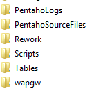Campos de la tabla SVA_OBJECTS:
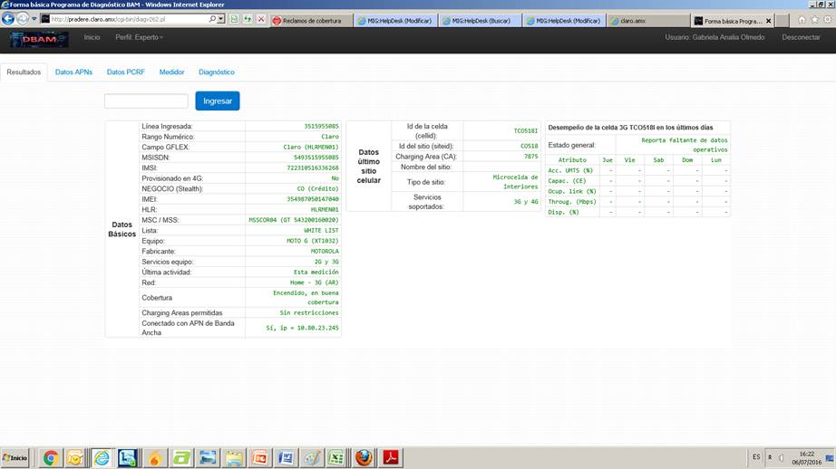Campos de la tabla TEC_CE_CDC_TPS_AUX:
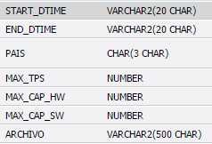Campos de la tabla TEC_CE_CDC_TPS_AUX_TEMPLATE:
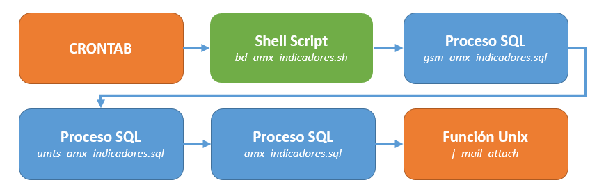Campos de la tabla TEC_CE_CDC_TPS_BH:

Campos de la tabla TEC_CE_CDC_TPS_DAY:
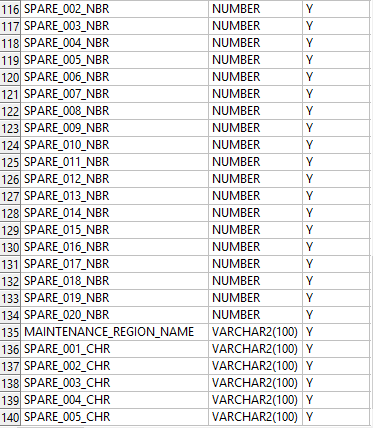Campos de la tabla TEC_CE_CDC_TPS_HOUR:

Campos de la tabla TEC_CE_CDC_TPS_IBHW:
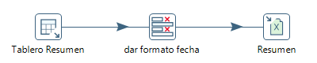Campos de la tabla TEC_CE_CM_TPS_AUX:

Campos de la tabla TEC_CE_CM_TPS_BH:
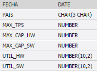Campos de la tabla TEC_CE_CM_TPS_DAY:
Campos de la tabla TEC_CE_CM_TPS_HOUR:

Campos de la tabla TEC_CE_CM_TPS_IBHW:
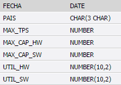Campos de la tabla TEC_CE_CM_TPS_RAW:

6. MACROFLUJO DEL PROCESO¶

6.2 Pentaho¶
Estructura del proyecto:
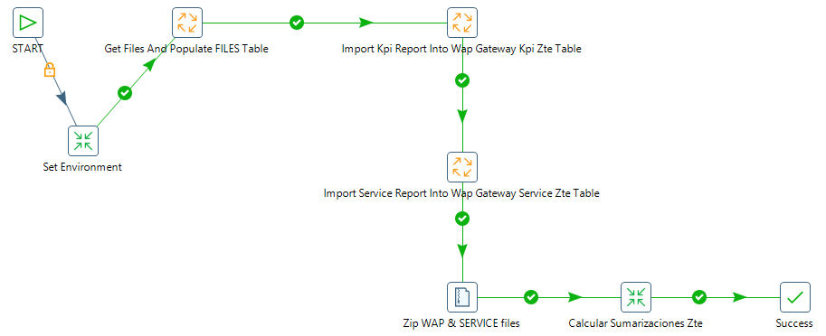- Proceso Pentaho End to End
Tenemos el Shell tecnotreeDiario que trae datos para el servidor Cortado. Luego setea variables de entorno, directorios donde se encuentran los datos para procesar los archivos disponibles.
En la Carpeta File se encuentran todos los archivos a procesar.
Los archivos a procesar dependen del status en que se encuentran:
- 0: Se procesó correctamente
- 1: Se procesó pero tuvo error
- 5: Para procesar

- Pentaho Inserción tabla Files
Get File Names To Import: se encarga de buscar los archivos del sistema operativo y los envía a Populate FILES table para escribirlos en la tabla File. Escribe los siguientes datos:
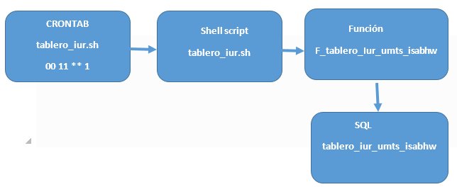
- Nombre del archivo
- Status
Por cada archivo debe crearse un proceso específico:
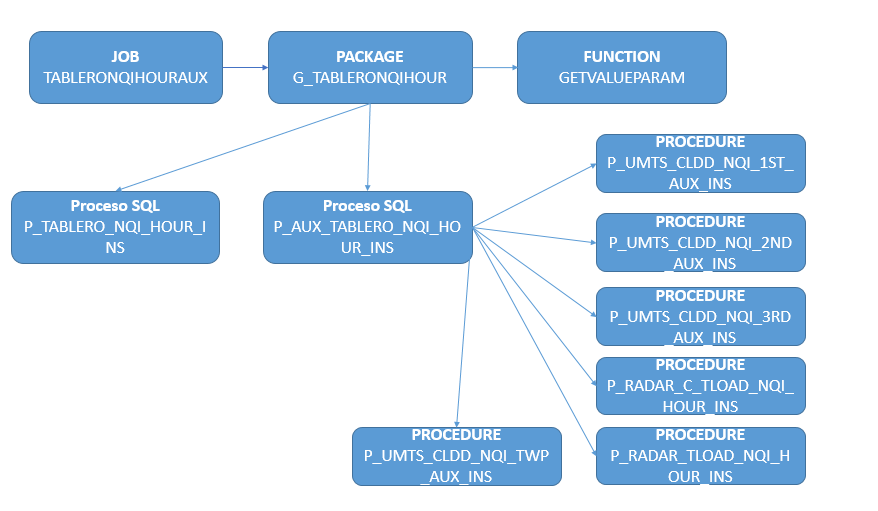
- Proceso CDC Data
- Proceso CM Data

- Pentaho Calculo Sumarizaciones
Las sumarizaciones se calculan a día vencido (el día anterior al actual), para dicho cálculo se debe llamar al procedimiento Call DB Procedure.
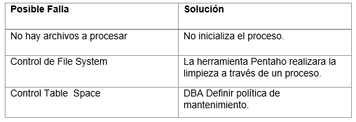7. REPROCESO MANUAL¶
7.1 Administración de particiones¶
Antes de realizar el reproceso manual se debe realizar la administración de particiones, la cual se encarga de borrar los datos que serán reprocesados e insertados nuevamente a la tabla.
Para realizar este proceso se debe ejecutar la siguiente querie:
Parámetros:
- Nombre de la tabla
- Fecha desde (DD.MM.YYYY)
- Fecha hasta (DD.MM.YYYY)
Para todos los niveles se utilizan los mismos parámetros de ejecución.
Por ejemplo:
- G_PARTITION_MGMT.P_DROP_PARTITION_WEEK(‘CISCO_GGSN_EPDG_ISABHW’,‘01.01.2017’,‘07.01.2017’);
7.2 Procedimiento de reproceso manual paso a paso:¶
Se debe ejecutar el script scpTecnotreeDate , el cual debe recibir por parámetro la Fecha solicitada, para realizar la limpieza, para luego ejecutar el TecnotreeCERework.kjb en Pentaho de manera manual.
Ubicación de los scripts en la carpeta /home/calidad/TecnotreeCE/Scripts
Ubicación del Rework de ejecución en Pentaho: /home/calidadTecnoTreeCE/Rework
El Formato de la fecha es el siguiente:
- YYYYMMDD
Por consola se utiliza de la siguiente manera:
- ./Pentaho61/data-integration/kitchen.sh -file=/home/calidad/TecnotreeCE/ TecnotreeCERework.kjb –param:FECHA_PROC= YYYYMMDD
8. SMART¶
Interfaz de cobro (CM) - Comparativo por País: Histórico
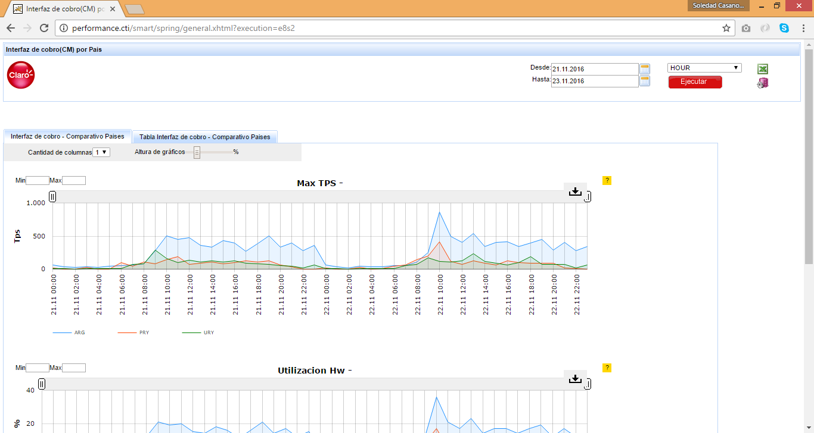Interfaz de cobro(CM) - Comparativo por País: Diario

Control de Contenido (CDC): Diario
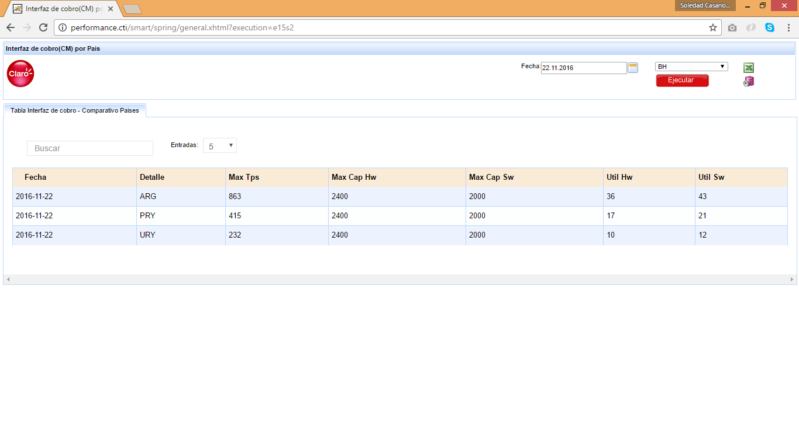Control de Contenido (CDC): Histórico
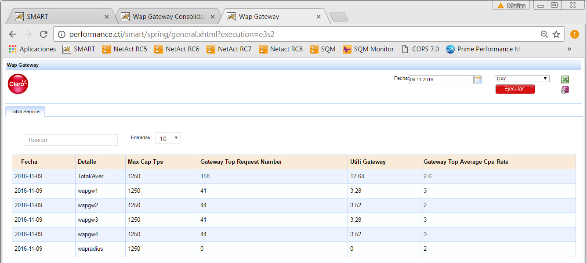Control de Contenido (CDC) - Comparativo por País

9. CONTROL DE CAMBIOS¶
| Fecha | Responsable | Ticket Jira | Detalle | Repositorio |
|---|---|---|---|---|